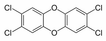
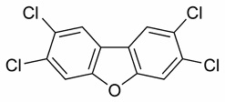

Cremation is an increasingly popular method for the disposal of human remains due to its relatively low cost and presumed low environmental impact compared to traditional burial. Both the fumes expelled during cremation and the mineralized remains of the skeleton (called “cremains”) are possible sources of toxic waste. Though the fumes are filtered for particles and certain compounds, crematoriums still spew toxins such as carbon dioxide and mercury into the atmosphere. Cremains are often powdered and sprinkled somewhere in memorial, releasing whatever compounds and toxins found in them back into the environment in a form that is easily picked up by wind or water. So what is the environmental impact of cremation?
.jpg)
Interest in the environmental impact of cremation as well as forensic applications for cremains have led to the use of several methods for analyzing cremains and crematorium emissions. Among the most popular of these methods are X-ray diffraction (XRD) for the analysis of cremain crystal structure, inductively-coupled plasma-optical emission spectroscopy (ICP-OES) for elemental analysis of cremains and fumes, particle-induced X-ray emission for trace element analysis in cremains and fumes, and gas chromatography-mass spectrometry (GC-MS) for gaseous compound separation and identification.
Gaseous emissions are by far the greatest source of cremation pollution and thus far the only crematorium waste that is regulated. In addition to harmless compounds such as water vapor (H2O), emissions include the green house gas carbon dioxide (CO2); pollutants and carcinogens carbon monoxide (CO), nitrogen oxide (NO2), and sulfur oxide (SO2); volatile acids such as hydrogen chloride (HCl) and hydrogen fluoride (HF), both of which form during vaporization of plastics or insulation; and mercury (often from dental fillings). Organic compounds such as benzenes, furans and acetone are also emitted and react with HCl and HF under combustion conditions to form polychlorinated dibenzodioxins (PCDDs) and polychlorinated dibenzofurans (PCDFs), both of which are carcinogens. Hg, PCDDs, and PCDFs are of special concern because they are susceptible to bioaccumulation. A study by the Cremation Association of North America has found that filtering crematorium fumes has little effect on the toxins released. However, when compared to yearly toxin release worldwide, crematoriums contribute only a very small fraction of harmful compounds or greenhouse gases.

PCDD

PCDF
Analysis by XRD or ICP-OES has found that the calcified compounds within cremains can contain metals such as lead, boron, cadmium, chromium, cobalt, copper, tin, lithium, magnesium, manganese, nickel and strontium. Metals such as arsenic and selenium, though present in a live human body, are volatile and decompose quickly upon burning. Levels of toxic metals in cremains are not regulated, though jewelry and metal joints or pacemakers are removed prior to cremation. I have found no studies of whether or not sprinkling cremation remains could have a significant impact on the levels of metals in the soil.

With human’s impact on earth becoming more of a concern, even with the disposal of our remains must be taken into account. Environmental agencies agree that burial is not the best method because of the space taken up, worry over toxic leakage from the casket (deteriorating plastics from insulation and lining, formaldehyde and metals from the body), and the environmental impact of casket manufacture. Cremation is often touted as the environmentally friendly alternative to burial, but even it uses coal or natural gas as heating fuel and emits toxic substances. Recently, freeze-drying and shattering of the body has been offered in Sweden as a cheap and environmentally friendly alternative to cremation. Liquid nitrogen is cheap and inert, lessening the environmental impact of freeze-drying, but the nitrogen must be collected, purified, and kept cold and confined, all of which require energy. The possible toxic contributions of freeze-dried remains would be about the same as cremains. Overall, even with the use of fossil fuels as a heat source, cremation contributes very little to atmospheric, water or soil pollution by metals such as mercury, lead or cadmium; or by green house gases such as carbon dioxide. Thus, a significant question in deciding between cremation or freeze-drying is cost. In both cases, future studies could be done to determine if cremains or premains (freeze-dried remains) have any environmental impact in places where remain disposal is popular, i.e. the atmosphere near the tops of tall buildings, the water and soil along popular riversides or the soil of popular gardens and national parks.
Resources
The Cremation Association of North America
The Internet Cremation Society
International Cemetery, Cremation and Funeral Association
References
Brooks, T. R., Bodkin, T. E., Potts, G. E., Smullen, S. A. Elemental Analysis of Human Cremains Using ICP-OES to Classify Legitimate and Contaminated Cremains. J Forensic Sci. 51, 967-973 (September 2006).
Cremation Association of North America. http://www.cremationassociation.org/html/environment.html Accessed September 23, 2007.
“Cremation.” “Dioxins.” “Difurans.” Wikipedia.org. Accessed September 23, 2007.
Cremation, Incineration of corpses. <http://reports.eea.europa.eu/EMEPCORINAIR4/en/B991vs1.1.pdf>
Accessed September 24, 2007 through Wikipedia
Hiller, J. C., Thompson, T. J. U., Evison, M. P., Chamberlain, A. T., Wessa, T.J. Bone mineral change during experimental heating: an X-ray scattering investigation. Biomaterials. 24, 5091-5097 (2003).
Santarsieroa, A., Settimoa, G., Cappielloa, G., Vivianoa, G., Dell’Andreab, E., Gentilinic, L. Urban crematoria pollution related to the management of the deceased. Microchemical Journal. 79, 307-317 (2005).
Skoog, D. A., Holler, F. J., Crouch, S. R. Chapter Ten “Atomic Emission Spectrometry,” chapter twelve “Atomic X-ray Spectrometry.” Principles of Instrumental Analysis. 6th ed, 254-269, 303-328.
Takeda, N., Takaoka, M., Fujiwara, T., Takeyama, H., Eguchi, S. Measures to prevent emissions of PCDDs/DFs and co-planar PCBs from crematories in Japan. Chemosphere. 43, 763-771 (2001).
Author: Megan Love Huffman
- Alzheimer's 1 2
- Antibiotics
- Antifouling Paint
- Arthritis
- Ayurvedic Medicine
- Breast Feeding
- Cancer Therapy
- Cattle Feed
- Cerebral Ischemia
- Chelation Therapy
- Chernobyl
- Chicken Feed
- Chocolate
- Cigarettes
- Coal 1 2
- Copper Mining
- Cremation
- Diabetes
- Electronic Waste
- Hat Making
- Hard Metal Disease
- Hybrid Cars
- Imaging 1 2 3 4
- Industrial Pollution
- Jewelry Allergy
- Lead Poisoning
- Lewisite
- Magnetic Particles
- Makeup
- Mountain Top Removal
- MRI Imaging
- Neurotoxicity
- Nuclear Power
- Nuclear Weapons
- Ouch Ouch Disease
- Peripheral Neuropathy
- PET Imaging
- Photodynamic Therapy
- Phytoremediation
- Pregnancy
- Radioactivity 1 2
- Seafood
- Sunscreens
- Tattoos
- Vaccines
- Wound Healing